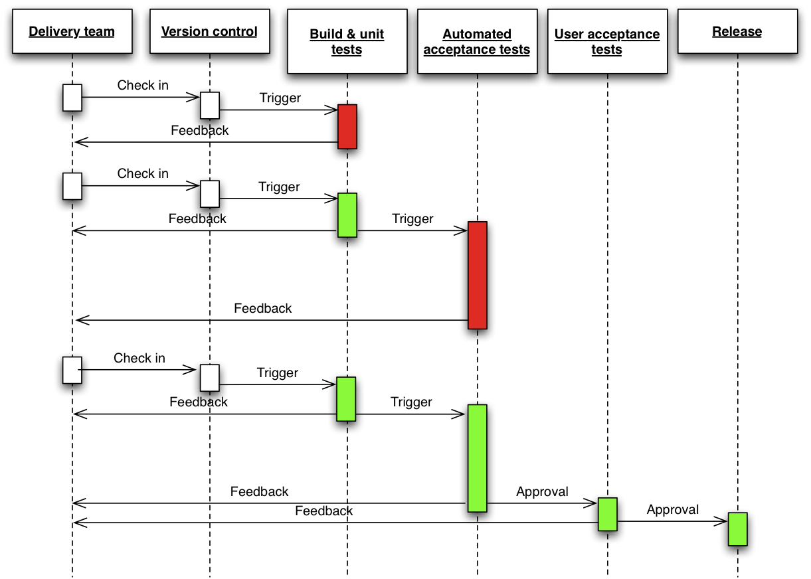

| z, ? | toggle help (this) |
| space, → | next slide |
| shift-space, ← | previous slide |
| d | toggle debug mode |
| ## <ret> | go to slide # |
| c, t | table of contents (vi) |
| f | toggle footer |
| g | toggle follow |
| r | reload slides |
| n | toggle notes |
| p | run preshow |
| P | toggle pause |
| s | choose style |

1) This workshop usually takes one day. I condensed it to fit in one hour.
When talking about CD you might get the feeling "this will NEVER work for me / in my organization."
THESE are exactly the pain points you should tackle.
Steven Smith: Continuous Delivery is all about organisational change. http://www.stephen-smith.co.uk/continuous-delivery-and-organisational-change/
"If you can't describe what you are doing as a process, you don't know what you're doing" - Deming
2) The story:
When giving a presentation it's often told it's best to tell a story to the audience.
Well, I can tell stories, because each deployment of a new software version used to be a horror story.
Back in the days.
This talk is about the journey I had giving a customer the freedom to deploy whenever they felt it's the right time.
And it's also about YOUR story. I'm happy to hear your story on how you deploy software and release new features.
It's OK to ask.

Manifesto for Agile Software Development We are uncovering better ways of developing software by doing it and helping others do it. Through this work we have come to value: Individuals and interactions over processes and tools Working software over comprehensive documentation Customer collaboration over contract negotiation Responding to change over following a plan That is, while there is value in the items on the right, we value the items on the left more.
Kent Beck Mike Beedle Arie van Bennekum Alistair Cockburn Ward Cunningham Martin Fowler
James Grenning Jim Highsmith Andrew Hunt Ron Jeffries Jon Kern Brian Marick
Robert C. Martin Steve Mellor Ken Schwaber Jeff Sutherland Dave Thomas
http://agilemanifesto.org/
Done on a meeting at a ski trip.
How long would it take your organisation
to deploy a change that involves
just one single line of code.
Do you do this on a repeatable, reliable basis?
Fast, automated feedback on the production readiness of your application every time there is a change - to code, infrastructure, or configuration
create a repeatable, reliable process for releasing software

Provisioning boxes Infrastructure as Code
Deployments Version control / Manage source code Code Reviews
DB migrations DBdeploy
Monitoring "We find a lot of bugs through production monitoring that we would have never concieved of writing tests for" – Mike Brittain, Etsy
Visibility
"Anything that can be measured can be improved" - Michael Dell, Dell Computers
business metrics technical metrics correlation
automate build, deploy, test, release can’t automate manual testing approvals are still necessary do it incrementally!
including middleware, dependencies and infrastructure config you should be able to sit down at a workstation, check out source code, and type a single command to build the app, and another to deploy it
Problem: pain at end. solution: pain at beginning. principle of CI. This has an effect on the narrative arc of a project
testing is not a “phase”. the quicker you catch it, the cheaper it is to fix. act!

"Cease dependence on mass inspection to
achieve quality. Improve the process
and build quality into the product
in the first place"
– W. Edwards Deming, Author of “Out of Crisis”

done != dev complete

"We have built the culture in our Engineering team to assume everyone is going to do the right thing, and we should trust them. When that trust falls apart, I think of it as a bug in our hiring and on boarding processes."
– Mike Brittain, Etsy
What if hiring is hard?
retrospectives: the agile practice from which all other agile practices follow deming cycle: plan, do, study act; organizational transformation; maturity model
an automated implementation
of your system’s build, deploy, test, release process
Visualize your Value Stream
visibility - helps collaboration, provides traceability feedback - is my software production ready right now? if not, why? control - pull system, push-button deployments

"We don't optimize for being right, we optimize for detecting when we're wrong"
– Mike Brittain, Etsy
Push button deployment into all environments, Push to live most business days, All tests run in 30s, Turnaround from request to production with entire quality process ~1 hour
highly distributed team, communication through chat room, everyone is pairing all of the time,
Puppet, Monitoring, Deployments… all accessible to anyone at Github through chat room



Cleanup to avoid technical debt!

Cleanup to avoid technical debt!
if( MyFeatures.FEATURE_ONE.isActive() ) {
// execute code for new feature
}
Cleanup to avoid technical debt!

Cleanup to avoid technical debt!
http://webdevnights.github.io/feature-flipping/
Implementations:
Ruby Flip github.com/pda/flip Rollout github.com/jamesgolick/rollout Degrade github.com/jamesgolick/degrade
PHP FeatureToggle (Symfony) github.com/marekkalnik/FeatureToggleBundle
Python Gargoyle (Django) github.com/disqus/gargoyle Django Waffle (Django) github.com/jsocol/django-waffle
Java http://www.togglz.org/quickstart.html
JavaScript FeatureFlipperJS (Node) github.com/bigodines/feature-flipper-js
.net FeatureToggle github.com/jason-roberts/FeatureToggle
Groovy GrailsFeatureToggle github.com/ryannorris/grails-feature-toggle

→ release to subset of customer
→ zero-downtime deployments


This is supplementary material that will only appear in the printed version.
Software has to be in releasable/deployable state all the time.


http://continuousdelivery.com/
What would you do when I'd be open fo losing control?
Was würde ich tun, wenn ich keine Angst hätte die Kontrolle zu verlieren?
"Whereby all code that is written for an application is immediately deployed into production, which results in a reduction of cycle time." – Eric Ries (Lean Startup)
A bad system will beat a good person every time – W. Edwards Deming, Author of “Out of Crisis”
@ctrabold
http://christian-trabold.de
Get involved: groups.google.com → continuousdelivery
Get tweets: twitter → #continuousdelivery